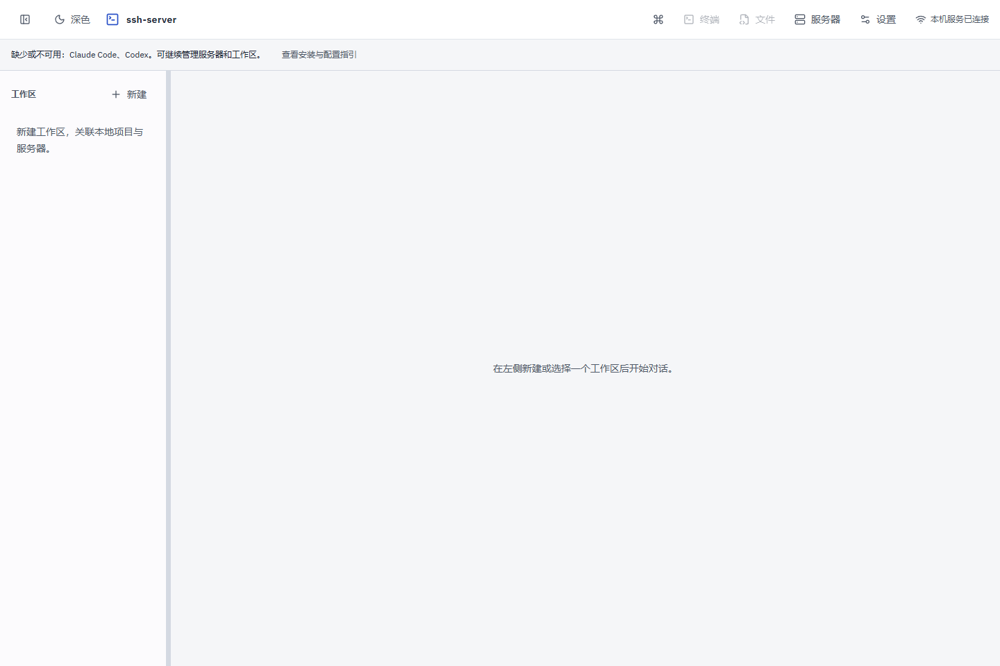
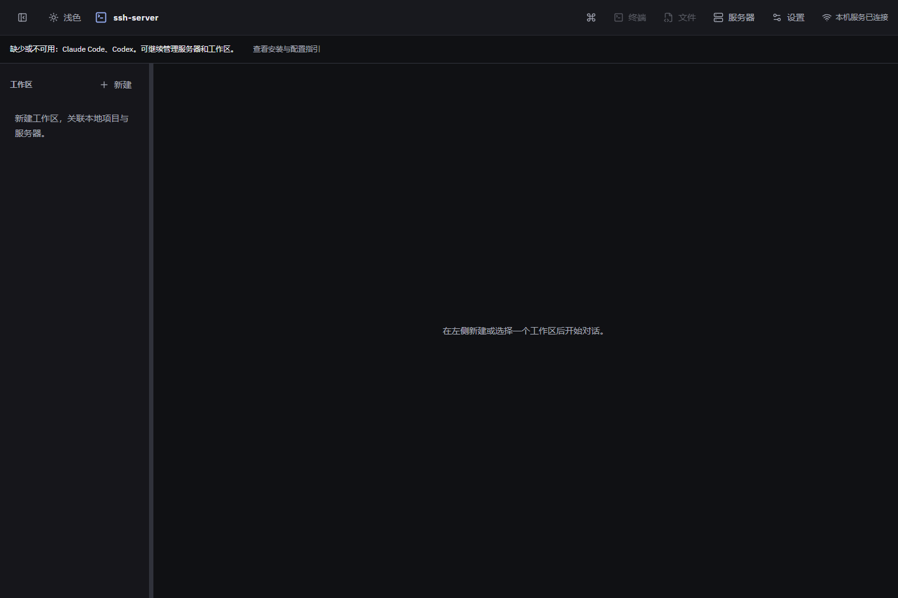
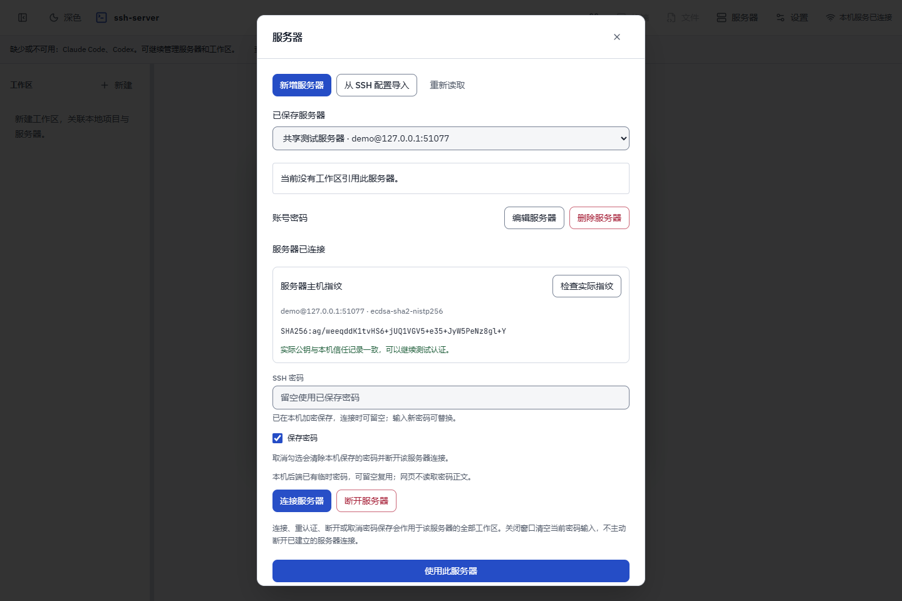
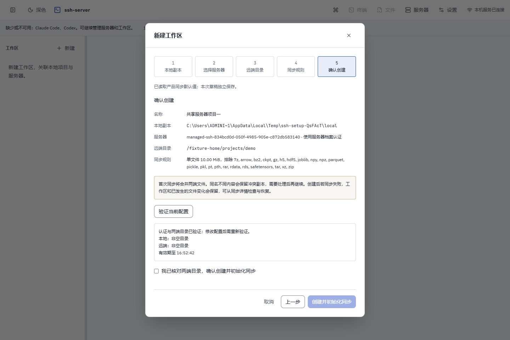
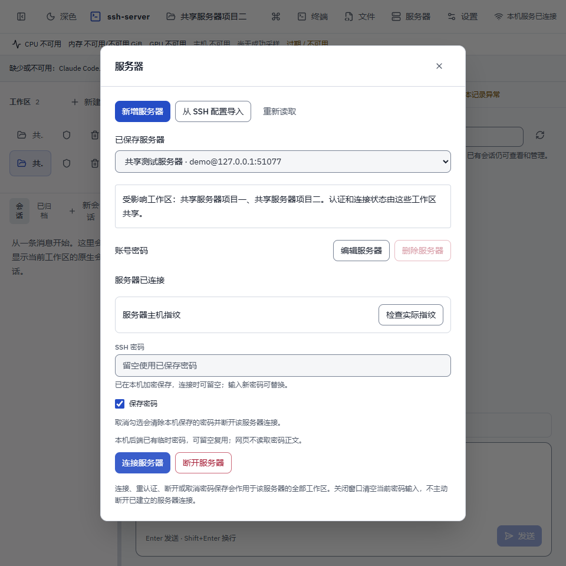
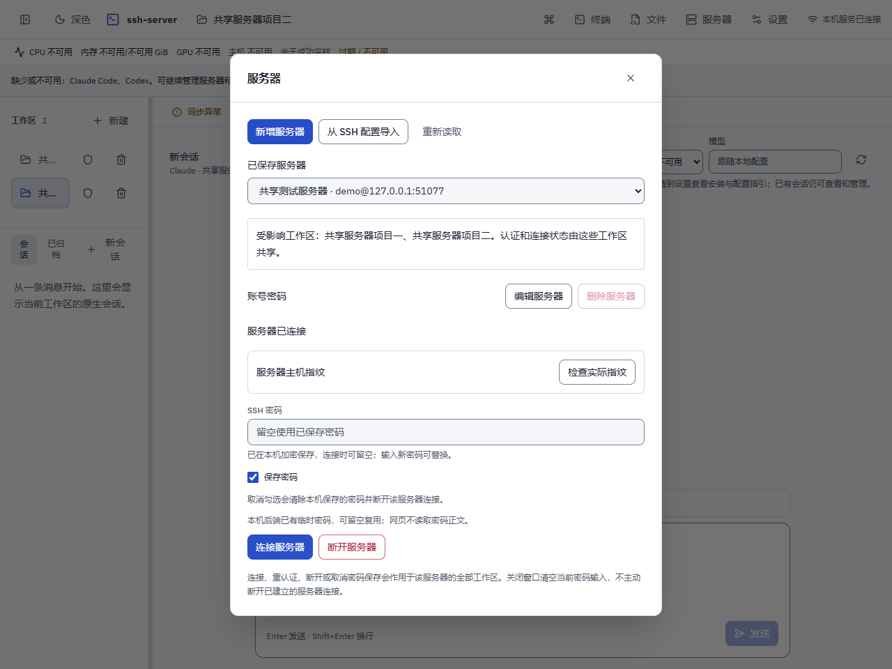
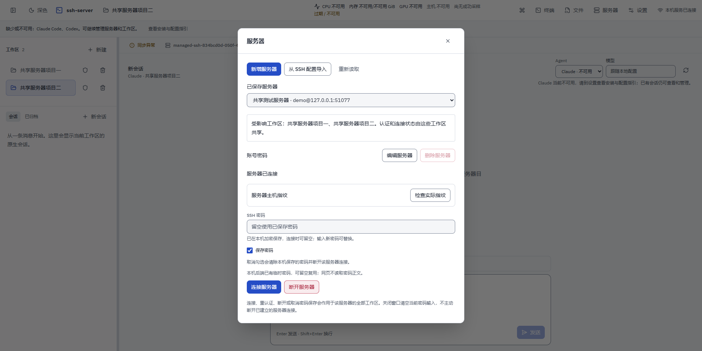
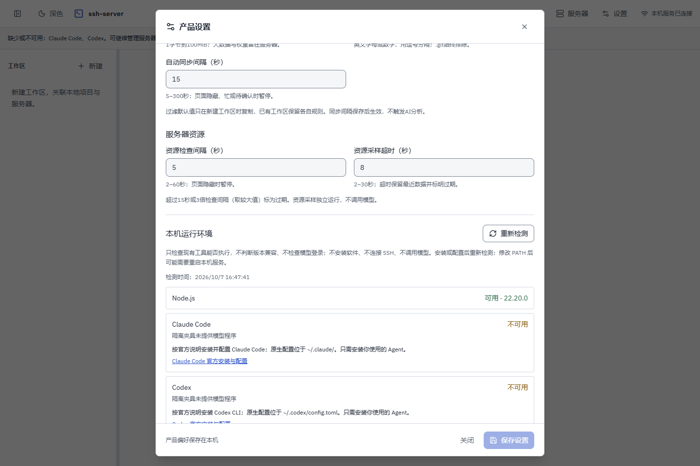
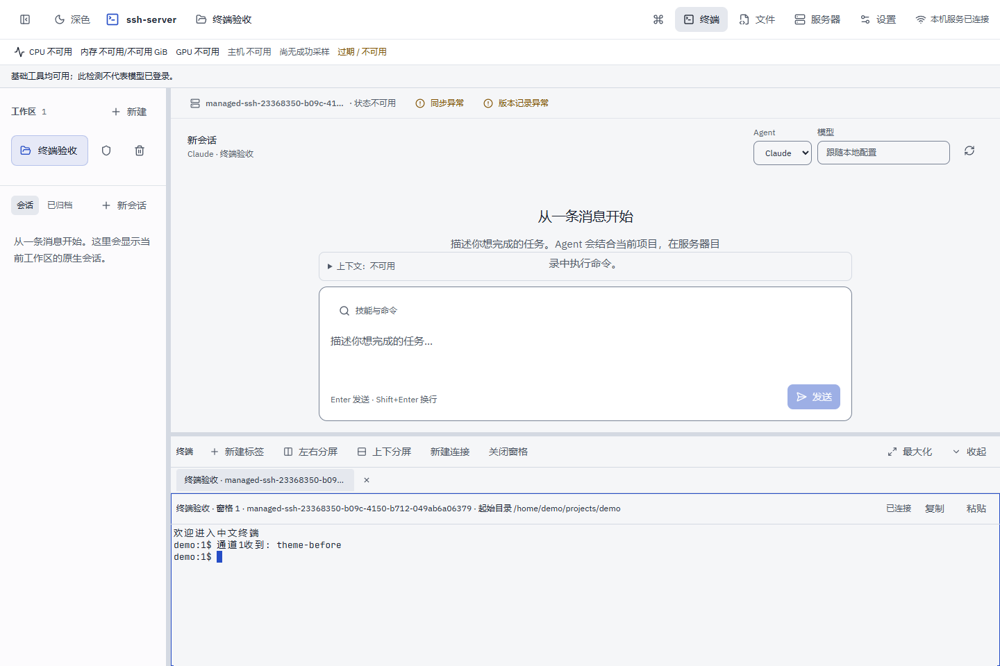
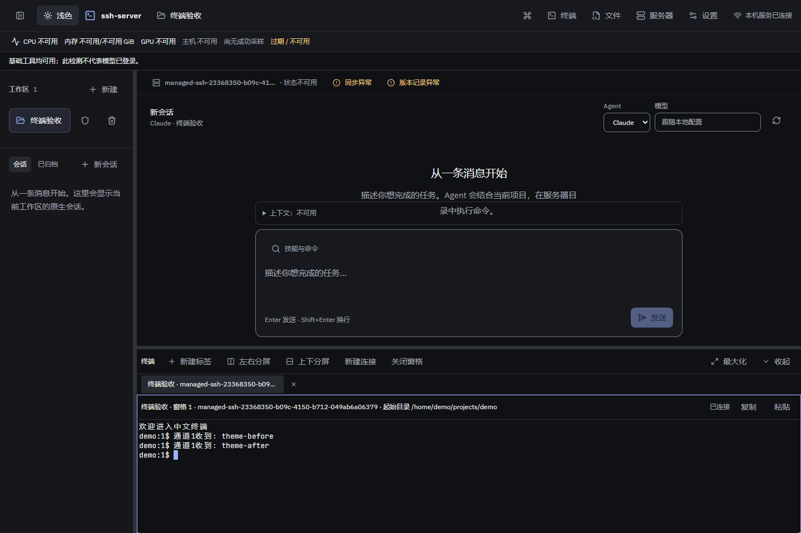

本机入口与统一服务器档案
2026-10-07，Edge 桌面浏览器，隔离配置与本机真实 SSH
协议夹具。同步结果和环境报告为合成数据；未调用模型或访问真实用户服务器。支持最小宽度为 960px。
首次浅色：纯端口入口、服务器按钮与缺依赖提示

深色：切换后刷新仍保持选择

统一认证：向导内打开同一服务器管理，密码由本机加密保存

工作区确认：复用服务器认证，只提交工作区字段和验证票

960px：两个工作区共用档案，引用目标不可改且不能删除

1280px：统一服务器管理

1920px：统一服务器管理

环境报告：官方安装/配置指引和手动重检，不判断模型登录

浅色终端：使用现有 xterm 和真实 SSH PTY

深色终端：同一实例、同一通道继续接收输入
